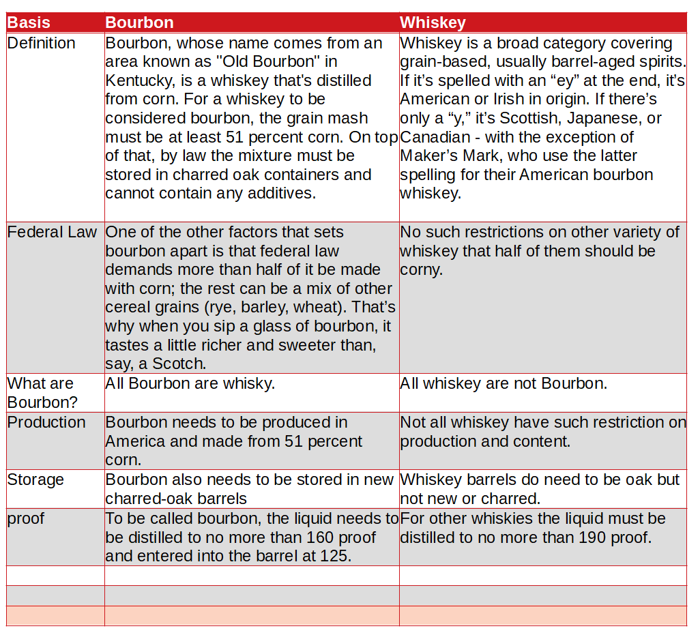

What is the main difference between Bourbon and Whiskey?
The main difference between Bourbon and Whiskey is Bourbon needs to be produced in America and made from 51 percent corn, and whiskey does not. One of the other factors that sets bourbon apart is that federal law demands more than half of it be made with corn; the rest can be a mix of other cereal grains (rye, barley, wheat). That’s why when you sip a glass of bourbon, it tastes a little richer and sweeter than, say, a Scotch whereas No such restrictions on other variety of whiskey that half of them should be corny.
It should be understood that whiskey is a broad term encompassing many categories. Bourbon is only one of them. Below is a list of common whiskeys. All are very much separate and distinct from one another:
■ Bourbon
■ Canadian Whiskey
■ Irish Whiskey
■ Rye
■ Scotch
■ Tennessee Whiskey
■ White Whiskey (Moonshine)
| Basis | Bourbon | Whiskey |
| Definition | Bourbon, whose name comes from an area known as "Old Bourbon" in Kentucky, is a whiskey that's distilled from corn. For a whiskey to be considered bourbon, the grain mash must be at least 51 percent corn. On top of that, by law the mixture must be stored in charred oak containers and cannot contain any additives. | Whiskey is a broad category covering grain-based, usually barrel-aged spirits. If it’s spelled with an “ey” at the end, it’s American or Irish in origin. If there’s only a “y,” it’s Scottish, Japanese, or Canadian - with the exception of Maker’s Mark, who use the latter spelling for their American bourbon whiskey. |
| Federal Law | One of the other factors that sets bourbon apart is that federal law demands more than half of it be made with corn; the rest can be a mix of other cereal grains (rye, barley, wheat). That’s why when you sip a glass of bourbon, it tastes a little richer and sweeter than, say, a Scotch. | No such restrictions on other variety of whiskey that half of them should be corny. |
| What are Bourbon? | All Bourbon are whisky. | All whiskey are not Bourbon. |
| Production | Bourbon needs to be produced in America and made from 51 percent corn. | Not all whiskey have such restriction on production and content. |
| Storage | Bourbon also needs to be stored in new charred-oak barrels | Whiskey barrels do need to be oak but not new or charred. |
| proof | To be called bourbon, the liquid needs to be distilled to no more than 160 proof and entered into the barrel at 125. | For other whiskies the liquid must be distilled to no more than 190 proof. |
Bourbon
Since its birth, bourbon has transcended its status as intoxicant liquor, has become an American symbol used in political circles and popular culture, and has endured harsh economic times. In common with nearly all American whiskies, Bourbon is mostly produced in column stills. Bourbon is distilled principally from corn, and takes its name from Bourbon County in the state of Kentucky, which is still the principal state of production, being home to more than half the Bourbon distilleries in the United States.By law, Bourbon must be produced from a mash of not less than 51% corn grain, and is usually made from between 70% and 90% corn, with some barley malt and rye or wheat. It is bottled at between 80° and 101° proof.
It must be:
■ Produced in the United States
■ Made from a grain mixture that is at least 51% corn
■ Aged in new, charred oak containers
■ Distilled to no more than 160 (U.S.) (80% by volume)
■ Entered into the barrel for aging at no more than 125 proof (62.5% ABV)
■ Bottled (like other whiskeys) at 80 proof or more (40% ABV)
Whiskey
The expression 'whisky' or 'whiskey' shall mean spirits which have been distilled from a mash of cereals which have been - (i) saccharified by the diastase of malt contained therein with or without other natural diastases approved for the purpose by the Commissioners; and (ii) fermented by the action of yeast; and (iii) distilled at an alcoholic strength (computed in accordance with section 2 of the Alcoholic Liquor Duties Act (1979) less than 94.8% in such a way that the distillate has an aroma and flavour derived from the materials used, and which have been matured in wooden casks in warehouses for a period of at least three years.
The first whiskies are believed to have been made in Scotland and Ireland. The first record of whisky production in Scotland dates from 1494 (Anon. 1494 Craig, 1994), although whisky manufacture only started to become a regulated process in the nineteenth century. Whisky manufacture spread to the USA and Canada, where individual styles developed. Other countries also started mak- ing whisky, and nowadays production may also be found in Australia, India, Japan, New Zealand, Pakistan, Spain, and the Czech Republic (Murray, 1998).
Whisky is a distilled spirit fermented from cereals, distilled at less than a maximum alcoholic strength (normally <94.8 per cent vol.) and matured in oak casks for a minimum period (typically three years). The normal minimum bottling strength for consumption is 40 per cent vol. Additives are not normally permitted, except for spirit caramel in some whiskies for the purpose of colour standardization and water for alcoholic strength reduction from maturation to bottling strength.
Whisky definitions may be found in the laws of most countries. These laws help protect the interests of the consumer, the business of the manufacturer, and the tax revenue of the state. The most important definitions are those of countries where that particular whisky originates. Many other countries either refer to the definition of the home country in their own regulations, or use words and phrases taken from the home definition.